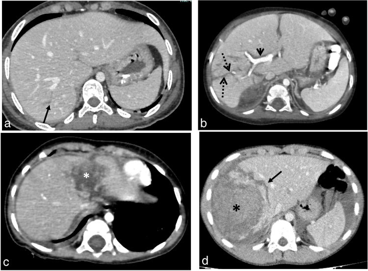
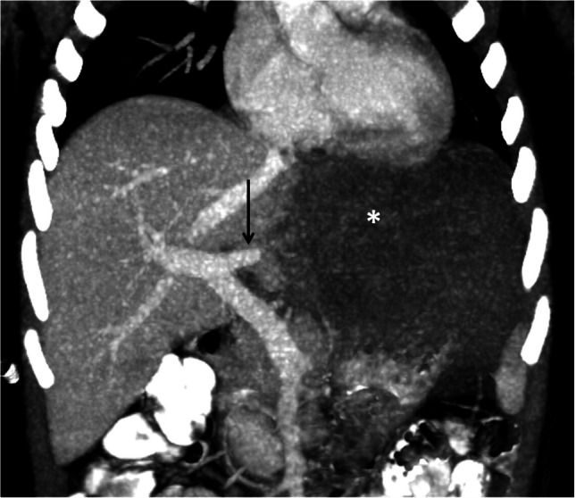
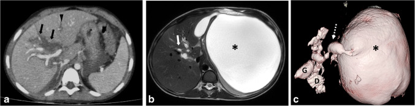
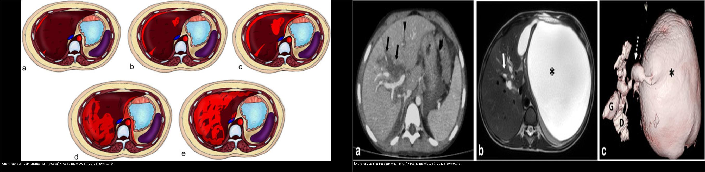

624 — Chấn thương gan & đường mật ở trẻ (AAST gan I–V, biloma & tổn thương đường mật muộn) / Pediatric hepatic & biliary trauma
Tags: pattern:chan-thuong-gan-nhi pattern:biloma pattern:tui-mat-gia vung:gan vung:duong-mat score:AAST protocol:CT-bung-can-quang protocol:MRCP
Mức chắc chắn (certainty): tổng hợp y văn (literature synthesis) + ca nguyên văn (verbatim case) cho các ca ảnh — số liệu lấy từ bài gốc có PMCID, ảnh CC BY 4.0.
1. Tổng quan bệnh học – cơ chế hình ảnh
- Ở trẻ, chấn thương bụng kín (blunt abdominal trauma) là nguyên nhân hàng đầu của chấn thương tạng đặc; gan là tạng đặc đứng thứ hai sau lách về tần suất tổn thương. Cơ chế điển hình: tay lái xe đạp/xe máy hoặc ngã đập vùng hạ sườn phải → nén – cắt (compression–shear) tại nơi gan tựa vào khung sườn/cột sống tạo đường vỡ (laceration), hoặc lực gây bóc vỏ dưới bao (subcapsular) khi nhu mô dịch chuyển trên bao Glisson cố định.
- Gan cấp máu kép (dual supply): ~75% từ tĩnh mạch cửa (portal vein), ~25% từ động mạch gan (hepatic artery). Vì vậy mô gan ngấm mạnh ở thì tĩnh mạch cửa (portal venous phase, ~70–80 giây). Máu/đường vỡ không ngấm thuốc → xuất hiện dưới dạng dải/vùng giảm đậm độ (hypodense) tương phản rõ nhất với nhu mô gan sáng ở thì này. Đây là lý do CT phải có cản quang + đúng thì; CT không cản quang gần như không thấy đường vỡ ở gan còn mạch.
- Xuất huyết hoạt tính (active hemorrhage) = đám máu có đậm độ tương đương động mạch đang ngấm (~>90 HU), giữ nguyên/lan ra ở thì muộn (5 phút) và không đi theo bể máu lưu hành — khác cục máu đông "lính gác" (sentinel clot, ~45–70 HU) là máu đã đông, bám sát tổn thương, không đổi ở thì muộn. Giả phình mạch (pseudoaneurysm) = túi tròn ngấm thuốc giữ nguyên hình dạng giữa các thì; rò động–tĩnh mạch (AV fistula) = động mạch gan và nhánh tĩnh mạch cửa ngấm đồng thời ở thì động mạch (xem ca Fig 6).
- Biloma – tổn thương đường mật MUỘN: dịch mật rò ra (bile leak) gây viêm hóa học phúc mạc/mô quanh gan → tập trung thành túi dịch có vách, đậm độ dịch (~0–20 HU trên CT), không ngấm thuốc, thường xuất hiện sau nhiều ngày – nhiều tuần (ca minh họa: túi mật giả phát hiện sau 1 tháng). Trên MRI, mật là dịch rất sáng trên T2W và không mất tín hiệu trên ảnh fat-sat (khác mỡ); MRCP 3D thấy túi dịch nối với các nhánh đường mật giãn qua một đường hầm nhỏ (dấu hiệu "có đường mật giãn" chốt lại nguyên nhân). Vì mật không đậm độ đặc hiệu trên CT, một túi dịch cạnh gan sau chấn thương phải nghĩ biloma, không được coi là "báng khu trú" hay "nang đơn thuần".
- Thang định lượng phải có: phân độ AAST-OIS gan I–V (bản 2018) — đã bỏ grade VI (avulsion) và bỏ mô tả theo phân thùy Couinaud vì không ảnh hưởng xử trí; tổn thương đường mật ngoài gan/túi mật hiếm, 0,9–3,7% các ca chấn thương gan kín ở trẻ; rò rỉ máu hoạt tính > 90 HU, sentinel clot 45–70 HU, dịch mật ~0–20 HU.
2. Mẫu hình + chẩn đoán phân biệt theo vị trí (gamut)
Mẫu hình chính: vùng giảm đậm độ (hypodense) trong nhu mô gan trên CT có cản quang thì tĩnh mạch cửa → gamut theo vị trí và cơ chế:
- Dưới bao (subcapsular): khối máu tụ dưới bao ép lõm nhu mô (trị số AAST theo % diện tích bề mặt < 10% / 10–50% / > 50%).
- Trong nhu mô (intraparenchymal): đường vỡ (laceration ≤ 1 cm, 1–3 cm, > 3 cm) và khối máu tụ (diameter < 10 cm / > 10 cm).
- Mạch máu (vascular): xuất huyết hoạt tính, giả phình mạch, rò động–tĩnh mạch, mất tưới máu phân thùy/thùy (devascularization) = phân độ V.
- Rốn gan – đường mật: tổn thương túi mật (máu tụ thành túi mật → grade I) đến đứt > 50% ống mật chủ / tổn thương đường mật trong tá tràng–tụy (grade V); biloma là biểu hiện muộn.
- Tĩnh mạch gan/IVC sau gan: tổn thương mạch gan chính = grade V, thường chảy máu ồ ạt, khó bảo tồn.
Gamut "vùng giảm đậm độ gan" cần phân biệt (xem mục 3): đường vỡ chấn thương vs thâm nhiễm mỡ khu trú vs giả tổn thương do bóng mạch (periportal tracking / transient hepatic attenuation difference) vs nang/biloma.
3. Bảng so sánh phân biệt (ma trận đối chiếu)
| Thực thể (entity) | Hình ảnh điển hình | Chốt vào (rule-in) | Chốt loại (rule-out) | Gợi ý xác nhận |
|---|---|---|---|---|
| Đường vỡ nhu mô (laceration) AAST I–III | Dải giảm đậm độ tuyến tính/phân nhánh ở thì tĩnh mạch cửa, có thể tới rốn gan | Dải giảm đậm độ có bờ nham nhở, cắt qua mạch máu, tương phản với nhu mô ngấm xung quanh | Mờ khu trú bờ đều, không cắt qua mạch, đổi theo thì = thâm nhiễm mỡ, không phải vỡ | Thì tĩnh mạch cửa; đo độ dài/độ sâu (≤ 1 / 1–3 / > 3 cm) để xếp độ |
| Máu tụ dưới bao / trong nhu mô | Khối hình thấu kính (dưới bao) hoặc ổ tròn (trong nhu mô) giảm đậm độ | Khối giảm đậm độ ép lõm nhu mô, không ngấm, kích thước theo % bề mặt hoặc đường kính | Ngấm thuốc kiểu nốt/viền = u, không phải máu tụ | Đo đường kính (ngưỡng 10 cm) và % diện tích bề mặt (10%, 50%) |
| Xuất huyết hoạt tính (active hemorrhage) | Đám đậm độ cao trong/dưới bao | Đậm độ > 90 HU, tương đương ĐM đang ngấm, TO RA/LAN ở thì muộn 5 phút, không theo bể máu | Đám đậm độ cao không đổi ở thì muộn, bám sát tổn thương = sentinel clot (45–70 HU), không phải chảy máu | Bắt buộc thì muộn 5 phút; window mô mềm |
| Mất tưới máu phân thùy (devascularization) – grade V | Thùy gan không ngấm ở mọi thì, mạch cấp máu đứt đột ngột | Một thùy không ngấm hoàn toàn + đầu mạch cửa/gan cắt cụt đột ngột | Vùng giảm ngấm một phần, có ngấm lại ở thì muộn = đụng dập, không mất mạch | MIP coronal + thì muộn |
| Rò ĐM–TM / giả phình mạch | Ngấm sớm bất thường | ĐM gan và TM cửa ngấm ĐỒNG THỜI ở thì động mạch (AVF); túi tròn giữ hình các thì (pseudoaneurysm) | Ngấm đồng thời không lặp lại giữa các thì = nhiễu do tiêm thuốc | Thì động mạch + MIP |
| Biloma (tổn thương đường mật MUỘN) | Túi dịch cạnh gan/rốn gan, có vách | Túi dịch 0–20 HU, không ngấm, trên MRCP nối nhánh đường mật giãn qua đường hầm nhỏ — xuất hiện ngày–tuần sau chấn thương | Túi dịch không nối đường mật, T2 không đồng nhất = nang/báng khu trú khác | MRI/MRCP (hoặc HIDA nếu đường mật không giãn) |
| Tổn thương túi mật – đường mật (0,9–3,7%) | Máu tụ thành túi mật / mất liên tục thành túi mật / đứt OMC | Thành túi mật không liên tục + máu tụ quanh túi mật; đứt > 50% OMC = grade V | Vách túi mật dày/ngấm liên tục = viêm túi mật, không vỡ | CT thì cửa; ERCP/MRCP nếu nghi đứt ống mật |
- Ảnh ghép đối chiếu:
— chấn thương gan cấp (sơ đồ phân độ AAST I–V) đặt cạnh di chứng muộn (biloma + MRCP), cùng bài gốc.
4. Protocol chụp + hệ phân độ/điểm chuẩn hóa
- Chỉ định: trẻ chấn thương bụng kín có đau/bảo vệ thành bụng, tụt huyết áp, hồng cầu giảm, hoặc X-quang/siêu âm nghi dịch máu — nhưng lựa chọn mức chụp theo ALARA (siêu âm FAST đầu tay; CT khi cần).
- CT bụng–chậu có cản quang tĩnh mạch, thì tĩnh mạch cửa (~70 giây) là thì chính để xếp độ tổn thương tạng đặc; thêm thì động mạch nếu nghi tổn thương mạch (rò ĐM–TM, giả phình) và thì muộn 5 phút để phân biệt xuất huyết hoạt tính với cục máu đông. Dùng cửa sổ gan cho nhu mô gan, cửa sổ mô mềm cho máu/ổ bụng, cửa sổ phổi cho khí, cộng tái tạo MPR (coronal/sagittal) và MIP — thuật toán đọc nhanh "ASU+" (Air/Active hemorrhage – Solid organ – Urological + các cấu trúc khác).
- Xếp độ bằng AAST-OIS 2018: grade VI (avulsion) đã bỏ; đơn vị mô tả không còn dùng phân thùy Couinaud.
- Xử trí ở trẻ KHÁC người lớn: quyết định theo huyết động — trẻ ổn định huyết động thì điều trị bảo tồn (non-operative management) bất kể độ CT, nhập viện theo dõi; độ AAST giúp dự đoán khả năng thất bại bảo tồn và chọn BN cần can thiệp mạch (nút mạch) chứ không phải chỉ định mổ ngay. Tổn thương đường mật biểu hiện muộn → sau giai đoạn cấp, nếu túi dịch cạnh gan/rốn gan, phải chụp MRI/MRCP theo dõi (ưu tiên MRI để giảm liều xạ ở trẻ).
flowchart TD
A[Trẻ chấn thương bụng kín, nghi tổn thương gan] --> B{Huyết động ổn định?}
B -->|Có| C[CT thì TM cửa + thì muộn 5 phút; xếp AAST I–V]
B -->|Không| D[Hồi sức + CT khẩn; bàn mổ / nút mạch]
C --> E{Có xuất huyết hoạt tính / giả phình / rò ĐM–TM?}
E -->|Có| F[Can thiệp mạch: nút mạch]
E -->|Không| G[Bảo tồn + theo dõi]
G --> H{Túi dịch cạnh gan/rốn gan xuất hiện muộn?}
H -->|Có| I[MRI/MRCP: túi dịch nối đường mật = Biloma]
H -->|Không| J[Theo dõi lâm sàng]
I --> K[Dẫn lưu qua da ± ERCP/stent]
5. Biến thể bình thường và cạm bẫy
- Giả tổn thương "periportal tracking": vùng giảm đậm độ bao quanh nhánh tĩnh mạch cửa do phù/dịch theo khoang mạch (gặp sau chấn thương, sốc, truyền dịch) — không phải đường vỡ; đặc điểm giúp loại: mờ, bờ đều, chạy dọc mạch, không cắt ngang nhu mô.
- Thâm nhiễm mỡ khu trú (focal fat): cũng giảm đậm độ nhưng không có bờ nham nhở, không thay đổi giữa các thì, không đi kèm máu tụ/dịch.
- Sentinel clot vs xuất huyết hoạt tính: cả hai đều sáng; chốt bằng thì muộn — chảy máu hoạt tính to ra/lan, cục máu đông bất động.
- Cạm bẫy dịch bụng (ascites) vs máu: trên CT ngang, dịch/máu ở khoang quanh gan và túi cùng Douglas lan theo khoang; phân biệt với báng bằng đậm độ (máu mới ~30–45 HU, báng ~0–15 HU) — không quyết định vị trí chỉ dựa vào một lát cắt.
- Bỏ sót biloma: đường vỡ sâu tới rốn gan hoặc tổn thương vùng rốn gan/túi mật là yếu tố nguy cơ; tổn thương đường mật âm tính trên CT cấp vẫn có thể xuất hiện muộn → chụp lại/MRCP nếu trẻ đau tăng, sốt, hoặc dịch cạnh gan tồn dư.
- Nhầm lẫn về xử trí: trong ảnh chấn thương ở trẻ, độ AAST cao KHÔNG đồng nghĩa phải mổ — tránh "đọc độ rồi mổ oan".
6. Tự lượng giá — Blind Quiz
Ca 1 — Bé trai, chấn thương bụng kín, CT thì tĩnh mạch cửa.

- Gợi ý lâm sàng (clinical context): trẻ bị tay lái/ngã, đau hạ sườn phải.
- Câu hỏi: Mô tả tổn thương gan trên CT? Chúng tương ứng độ AAST nào?
Bấm để hiện đáp án (findings + chẩn đoán)
- Dấu hiệu (findings): (a) đường vỡ vỏ mỏng tuyến tính, sâu 1–3 cm = grade II; (b) đường vỡ sâu phân nhánh > 3 cm, kèm giảm đậm độ quanh rốn gan = grade III; (c) máu tụ trong nhu mô < 10 cm = grade III**; (d) máu tụ trong nhu mô **> 10 cm phá hủy > 75% thùy phải + đường vỡ sâu cạnh đó = grade V.
- Chẩn đoán (diagnosis): chấn thương gan các độ II/III/V — chốt độ bằng độ sâu đường vỡ (1/3 cm), đường kính máu tụ (10 cm) và % phá hủy nhu mô; đường vỡ giảm đậm độ vì máu không ngấm thuốc trên nền gan ngấm mạnh thì tĩnh mạch cửa.
- Nguồn ảnh: Fig 4, Mohammad SA et al., Pediatr Radiol 2025 (PMC12513975), CC BY 4.0.
Ca 2 — Bé trai 5 tuổi, CT thì tĩnh mạch cửa, MIP coronal.

- Gợi ý lâm sàng: chấn thương kín, tổn thương gan nặng.
- Câu hỏi: Dấu hiệu chính? Vì sao đây là tổn thương nặng (độ nào)? Cần làm gì tiếp?
Bấm để hiện đáp án (findings + chẩn đoán)
- Dấu hiệu: thùy trái gan hoàn toàn KHÔNG ngấm thuốc (dấu hoa thị), kèm cắt cụt đột ngột nhánh trái tĩnh mạch cửa (mũi tên) → mất tưới máu thùy (devascularization), grade V.
- Chẩn đoán: đứt/tắc nhánh mạch cấp máu thùy gan — cần đánh giá mạch (CTA/MIP) và cân nhắc can thiệp mạch; theo dõi huyết động sát vì nguy cơ thất bại bảo tồn cao.
- Nguồn ảnh: Fig 5, Mohammad SA et al., Pediatr Radiol 2025 (PMC12513975), CC BY 4.0.
Ca 3 — Bé trai 6 tuổi, CT lúc chấn thương và MRI chụp lại sau 1 tháng.

- Gợi ý lâm sàng: đường vỡ sâu vùng rốn gan (grade III); sau 1 tháng xuất hiện tổn thương dạng nang.
- Câu hỏi: (1) Tổn thương muộn là gì? (2) Dấu hiệu nào trên MRCP chốt nguyên nhân? (3) Xử trí?
Bấm để hiện đáp án (findings + chẩn đoán)
- Dấu hiệu: (a) CT lúc chấn thương: đường vỡ sâu thùy phải tới rốn gan + giãn nhánh đường mật trong gan (đầu mũi tên); (b, c) MRI sau 1 tháng: túi dịch lớn vùng hạ sườn trái nối với nhánh đường mật giãn qua một đường hầm nhỏ → biloma do rò mật chấn thương (traumatic biloma).
- Chẩn đoán: biloma (túi mật giả) — rò mật ra nhu mô/mặt gan tạo túi dịch có vách; chốt bằng MRCP thấy đường nối đường mật. Xử trí: dẫn lưu qua da ± ERCP/stent đường mật.
- Nguồn ảnh: Fig 7, Mohammad SA et al., Pediatr Radiol 2025 (PMC12513975), CC BY 4.0.
Ca 4 — Ảnh tổng hợp phân độ AAST gan I–V + di chứng biloma.

- Câu hỏi: Kể tên 3 ngưỡng định lượng phân biệt độ AAST gan I–III và cho biết thứ tự xuất hiện theo thời gian của biloma so với tổn thương cấp.
Bấm để hiện đáp án (findings + chẩn đoán)
- Đáp án: (1) máu tụ dưới bao < 10% bề mặt = I, 10–50% = II, > 50% = III; (2) đường vỡ ≤ 1 cm = I, 1–3 cm = II, > 3 cm = III; (3) máu tụ trong nhu mô < 10 cm = (III), > 10 cm = nâng độ. Biloma là biến chứng MUỘN (ngày–tuần), xuất hiện sau giai đoạn cấp.
- Nguồn ảnh: ghép từ Fig 3 + Fig 7, Mohammad SA et al., Pediatr Radiol 2025 (PMC12513975), CC BY 4.0; ghép bằng
tools/make_composite.py.
Bài liên quan chéo
- 623 – Chấn thương tụy–tá tràng ở trẻ (AAST tụy I–V)
- 637 – Chấn thương bàng quang & niệu đạo nhi
- 636 – Cấp cứu niệu–sinh dục nhi (chấn thương thận AAST)
- 140 – Lách & chấn thương tạng đặc (AAST lách)
- 665 – Khối u gan ở trẻ em
Ảnh
- Tên file:
624_gan-chant-huong_*. Nguồn + giấy phép từng ảnh trongimages/CREDITS.md(toàn bộ CC BY 4.0). - Ảnh ghép:
images/composite_AAST-gan-vs-biloma.jpg(Pillow letterbox, giữ aspect, không crop/kéo giãn).
Không dùng để chẩn đoán độc lập khi chưa có người hướng dẫn.